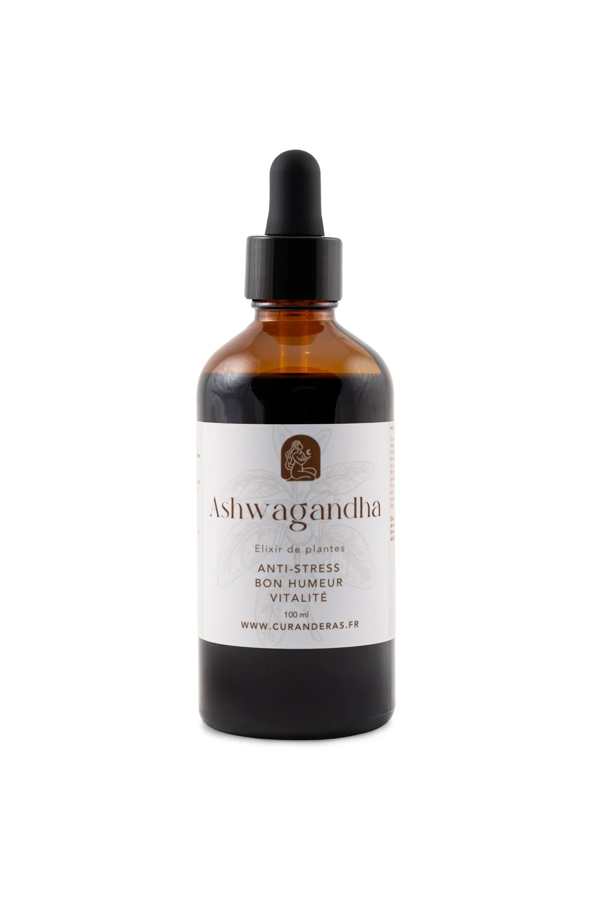

Élixirs naturels · 5 min de lecture
Élixir à l’Ashwagandha : le rituel naturel pour apaiser le mental, renforcer le corps et retrouver l’équilibre


Introduction
Nous vivons dans une époque où le stress est devenu quasi permanent. Pression mentale, fatigue nerveuse, sommeil perturbé, tensions physiques… Le corps encaisse, souvent en silence, jusqu’au moment où l’équilibre se rompt.
Plutôt que de chercher des solutions artificielles pour « tenir le coup », il est parfois plus juste de soutenir l’organisme intelligemment, en respectant son rythme et sa nature profonde.
Dans cet article, je te présente un élixir naturel à base d’ashwagandha, une plante adaptogène majeure utilisée depuis des siècles pour renforcer la résilience du corps face au stress.
Associée à des ingrédients choisis avec soin, elle forme une alchimie optimale pour la santé mentale, nerveuse et hormonale.
👉 Je tiens à vous rappeler une règle d’or que j’aime beaucoup et qui guide mes choix au quotidien : si la nature ne l’a pas créé, ne le buvez pas.
Le problème
Le stress chronique n’est pas seulement un inconfort mental. Il agit en profondeur sur tout l’organisme :
fatigue persistante malgré le repos,
nervosité, anxiété latente, surcharge mentale,
troubles du sommeil,
baisse de concentration et de motivation,
dérèglements hormonaux et baisse de vitalité.
À long terme, le système nerveux s’épuise, l’immunité s’affaiblit et le corps entre en mode survie.
Le problème n’est pas le manque de volonté, mais le manque de soutien physiologique adapté.
La promesse
L’élixir à l’ashwagandha agit comme un régulateur naturel du stress.
Il aide le corps à s’adapter aux pressions du quotidien, apaise le mental, améliore la récupération et soutient l’énergie de fond, sans excitation artificielle.
Ce n’est pas un stimulant.
C’est un rééquilibrant profond.
Les bénéfices
Un mental plus calme et plus clair
Une meilleure résistance au stress quotidien
Un sommeil plus profond et réparateur
Une énergie plus stable et durable
Un soutien global du système nerveux et hormonal
🌿 Pourquoi ce remède est efficace
L’ashwagandha est classée parmi les plantes adaptogènes, c’est-à-dire qu’elle aide le corps à s’adapter aux stress physiques, émotionnels et environnementaux.
Son action est unique :
elle ne stimule pas artificiellement, elle régule.
Elle agit notamment sur :
le système nerveux,
l’axe du stress (cortisol),
la récupération physique et mentale.
Lorsqu’elle est associée à des ingrédients nourrissants et calmants comme le lait végétal, le miel et les épices douces, son absorption est améliorée et son action devient plus harmonieuse.
👉 Résultat : un apaisement progressif, profond et durable, sans effet secondaire agressif.
💪 Les bienfaits de l’élixir à l’ashwagandha
Réduction du stress et de l’anxiété
L’ashwagandha aide à réguler le cortisol, l’hormone du stress, favorisant un état de calme intérieur.Amélioration du sommeil
En apaisant le système nerveux, elle facilite l’endormissement et améliore la qualité du repos.Soutien de l’énergie vitale
Contrairement aux excitants, elle renforce l’énergie de fond sans provoquer de nervosité.Soutien hormonal naturel
Elle participe à l’équilibre hormonal, aussi bien chez l’homme que chez la femme.Meilleure résilience mentale et émotionnelle
Le mental devient plus stable, plus clair, plus résistant aux tensions extérieures.
🍵 La recette de l’Élixir Équilibre à l’Ashwagandha
Ingrédients (alchimie optimale)
½ cuillère à café de poudre d’ashwagandha (bio, de qualité)
200 ml de lait végétal (amande ou avoine, idéalement)
1 cuillère à café de miel brut (optionnel)
½ cuillère à café de cannelle
Une pincée de gingembre ou de cardamome (optionnel)
Une pincée de curcuma (facultatif mais synergique)
Pourquoi cette synergie fonctionne ?
Le lait végétal nourrit le système nerveux et adoucit l’action de l’ashwagandha.
Le miel apporte une énergie douce et soutient l’assimilation.
La cannelle et les épices améliorent la digestion et la biodisponibilité.
Le curcuma soutient l’inflammation et la récupération.
Préparation
Fais chauffer le lait végétal à feu doux (sans le faire bouillir).
Ajoute l’ashwagandha et les épices.
Mélange doucement jusqu’à obtention d’une boisson homogène.
Ajoute le miel hors du feu.
Bois chaud ou tiède, lentement.
⏰ Comment l’utiliser
À consommer 1 fois par jour, idéalement :
le soir pour favoriser la détente et le sommeil,
ou en fin de journée pour relâcher les tensions accumulées.
Peut être pris en cure de 3 à 6 semaines.
Les effets sont progressifs : la régularité est la clé.
👥 À qui s’adresse ce rituel
À ceux qui vivent un stress mental ou émotionnel intense
Aux personnes fatiguées nerveusement
À ceux qui ont du mal à se détendre ou à dormir
Aux personnes actives, surmenées ou en période de transition
À tous ceux qui recherchent une solution naturelle et profonde pour retrouver l’équilibre
⚠️ Précautions
Respecte les dosages : l’ashwagandha est puissante.
Déconseillée aux femmes enceintes sans avis médical.
En cas de traitement médicamenteux ou de troubles hormonaux, demande conseil à un professionnel de santé.
Choisis une ashwagandha pure, bio et sans additifs.
🌱 Conclusion & appel à l’action
L’élixir à l’ashwagandha n’est pas une solution miracle immédiate.
C’est un rituel de reconnexion, une manière d’envoyer un message clair à ton corps : je te soutiens, je t’écoute, je te respecte.
👉 Si la nature ne l’a pas créé, ne le buvez pas.
Si tu souhaites aller plus loin dans cette approche naturelle du bien-être, je partage régulièrement :
des élixirs ciblés,
des rituels santé simples,
des guides pratiques pour renforcer le corps et apaiser le mental.
📚 Je suis auteur bien-être sous le pseudo Chest0 JM.S., et mes ouvrages sont disponibles sur Amazon.
🔗 Retrouve tout mon univers ici :
👉 https://linktr.ee/Chest00
✨ Commence aujourd’hui à nourrir ton système nerveux avec douceur, intelligence et naturel.
👉 Si tu veux aller plus loin, découvre aussi notre : Les bienfaits de la levure de bière
Plus de 40 recettes d'élixirs dans les livres Chest0.
Voir les livres